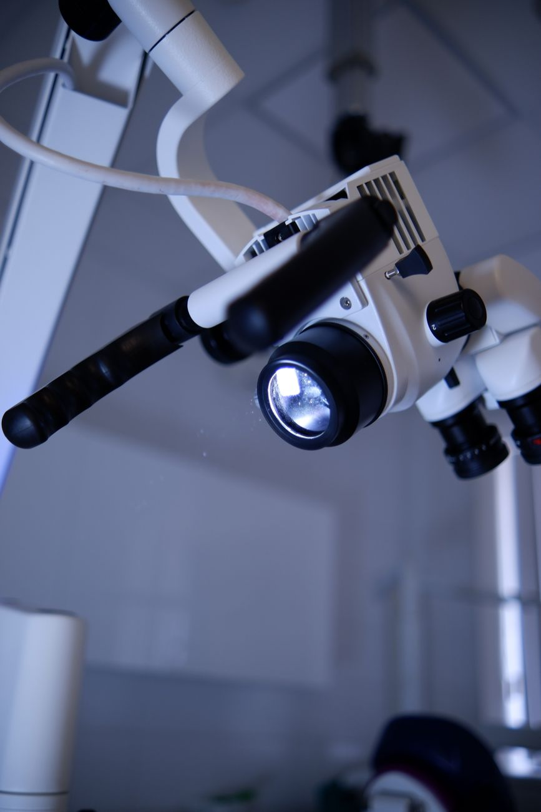
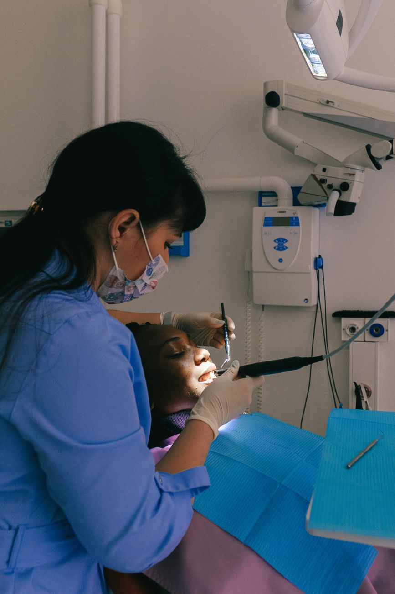
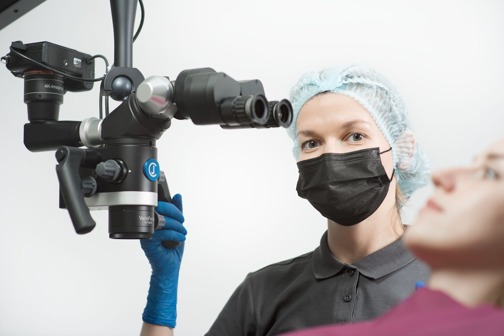
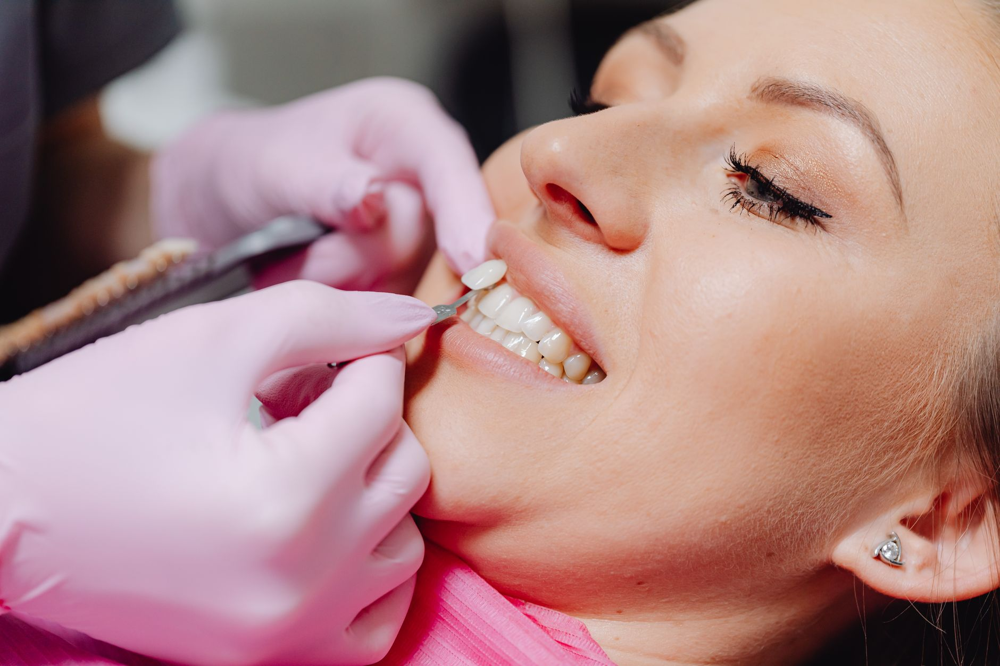
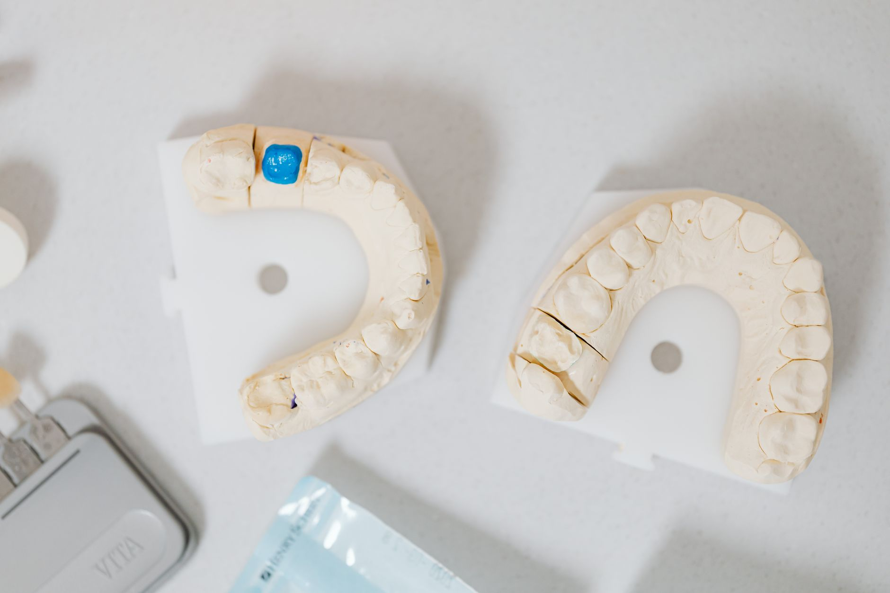
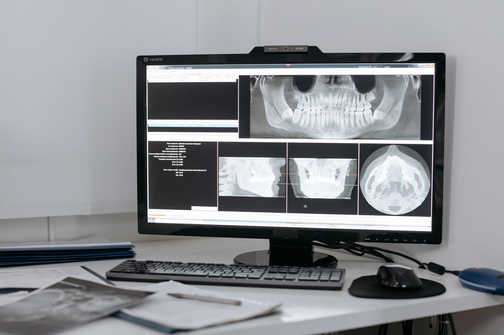
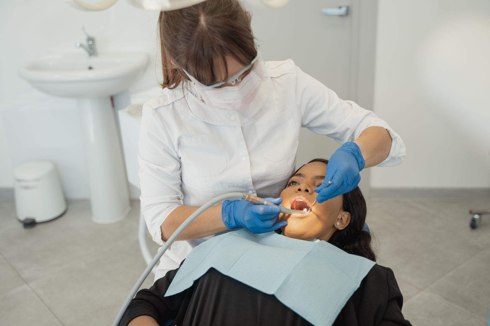
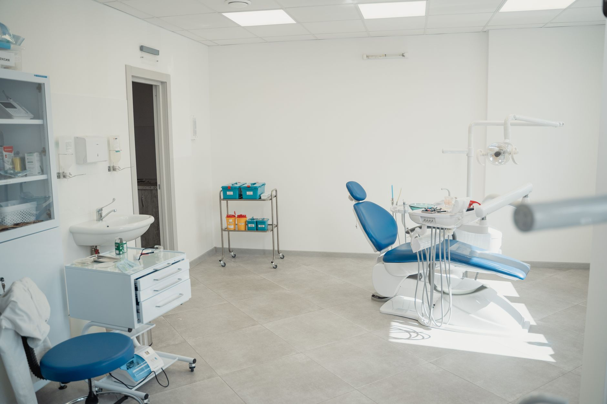
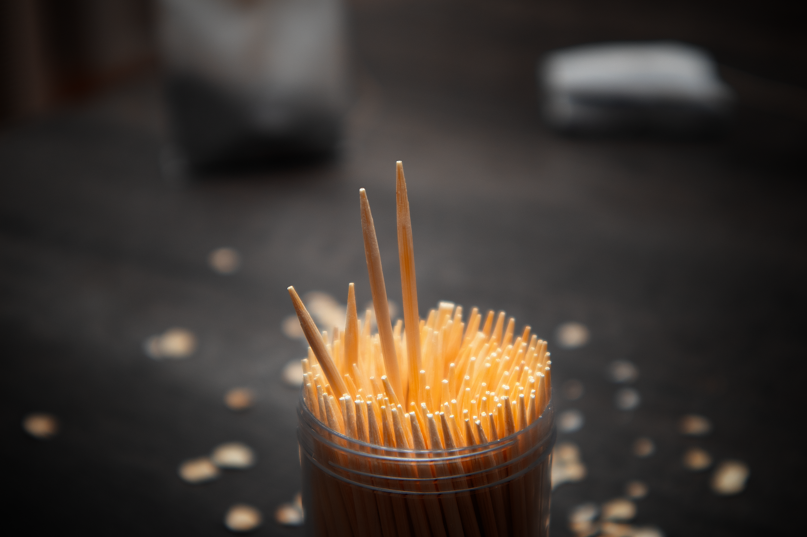

4.9★ Трускавець · мікроскопна стоматологія
Лікування під мікроскопом —
точність, що зберігає зуб.
Кабінет Gruber — мікроскопна стоматологія у Трускавці. Спеціалізуємось на складному лікуванні каналів і збереженні зубів, які деінде пропонують видалити.
4.9 в Google · 52 відгуки

01 Про кабінет
Там, де інші кажуть «видаляти» — ми рятуємо зуб під мікроскопом.
Мікроскоп дає багатократне збільшення й світло там, де око не бачить. Це точна діагностика, чисте лікування каналів і збереження зубів, на які вже махнули рукою.
-
МікроскопБагатократне збільшення — бачимо кожен канал.
-
Збереження зубаЛікуємо там, де інші пропонують видаляти.
-
Один лікарВеде ваш випадок від діагностики до результату.

Робота під мікроскопом02 Послуги
Точна робота
з кожним зубом





Вартість — після консультації та огляду. Зателефонувати [ЗАПОВНИТИ: ціни за напрямками]
03 Чому мікроскоп
Око бачить кілька,
мікроскоп — усі канали.
Більшість «безнадійних» зубів насправді можна зберегти — просто потрібно бачити. Мікроскоп дає збільшення та світло для чистого лікування каналів і надійного результату надовго.
4.9★рейтинг у Google — один з найвищих
52відгуки пацієнтів
×20збільшення під мікроскопом
04 Чому обирають Gruber
Причини довірити
складний випадок
Мікроскоп
Бачимо те, що приховано від ока — лікуємо точно.
Зберігаємо зуб
Боремося за кожен зуб перед видаленням.
Складні випадки
Беремося за перелікування після інших.
Стерильність
Обробка інструментів за протоколом.
Надовго
Якісне лікування, що служить роками.
Зручний запис
Підберемо час телефоном або в месенджері.
05 Кабінет
Точність, яку видно в деталях


06 Нам довіряють
4.9рейтинг у Google
один із найвищих у Трускавці
один із найвищих у Трускавці
52відгуки пацієнтів
складні випадки й перелікування
складні випадки й перелікування
20×збільшення
лікування під мікроскопом
лікування під мікроскопом
У центрі Трускавця
вул. Степана Бандери, 71, кабінет №46 (у комплексі «Перлина Прикарпаття»). Запис на прийом за телефоном.
Зателефонувати07 Запис на прийом
Записатися
на прийом
Залиште контакт — обговоримо ваш випадок і підберемо зручний час. Передзвонимо в робочі години.
- Адресавул. Степана Бандери, 71, каб. 46, Трускавець
- Телефон+38 050 507 00 70
- ГрафікЗа записом [ЗАПОВНИТИ]